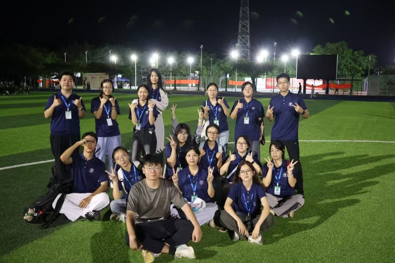

学生工作经历
2023.10-2026.07 农学院新媒体中心｜干事-负责人-主任
- 负责学院双公众号平台日常宣传运营，统筹易班工作站内容管理工作。
- 协助学院讲座、各类校园活动开展，承担现场组织、影像记录与素材拍摄工作。
- 对接学院领导与各学生部门，完成工作事项传达、信息同步与通知发布，保障部门协同运转。
参与审核、编辑制作的推文作品：
2024.07-2026.07 学院招生宣传中心｜干事-负责人
- 对接学校招生宣传职能部门，落实并向下传达各项招生工作部署；统筹管理学院招生宣传大使队伍，承担成员指导、日常管理、考核评优相关工作。
- 牵头落实学院高考阶段招生宣传的各项策划、组织与落地实施工作。
2024.07-2026.08 新生心理辅导员-助理班主任
- 协助新生完成入学适应、学籍办理等大学阶段衔接相关事务，做好新生过渡引导。
- 承担班级日常管理工作，组织开展主题班会，为新生提供学业、生活等多方面答疑解惑，做好日常引导与帮扶。

大型志愿服务
- 中国进出口商品交易会志愿服务，承担外商来访指引服务工作。
- 广州马拉松志愿活动，负责参赛者指引引导、存取衣物相关服务保障。